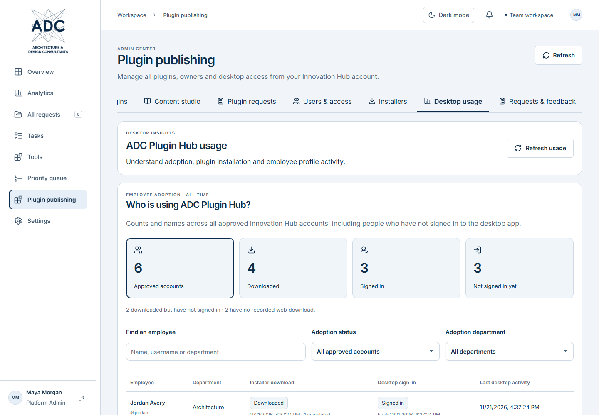

Business Systems Developer
Internal Tools Hub for Employee Requests and Adoption
I built an internal hub where employees request tools and share feedback. Staff can describe the problem and attach a recording. Administrators review submissions, manage the tool catalog, and see which approved accounts have downloaded or signed into the desktop hub. The system brings requests and adoption data into the same workflow.

Application screens
